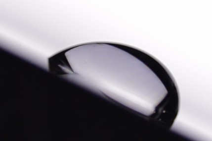
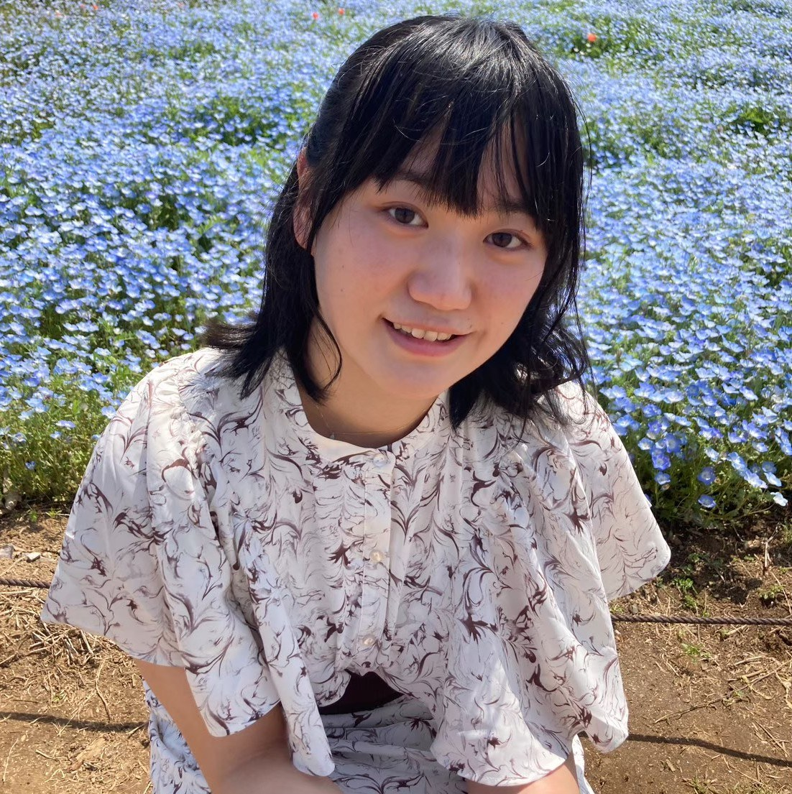
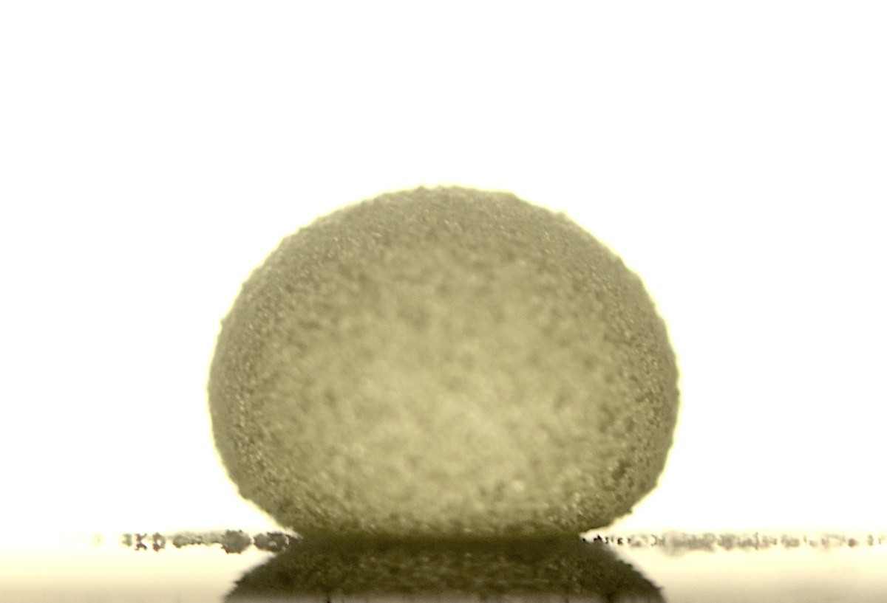
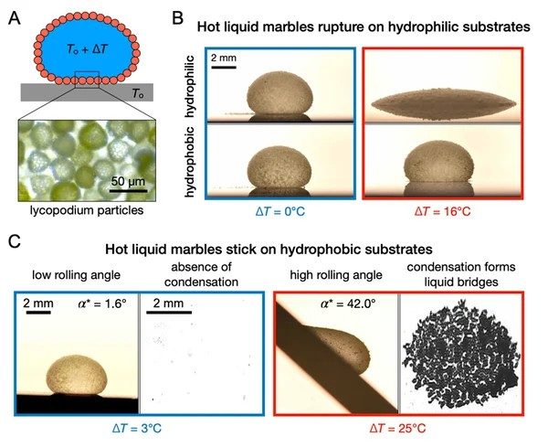

01
Manipulation of droplets
固体表面への液滴の付着を小さくし、微小な液滴をより扱いやすくするための表面・界面設計を研究しています。
SOFT MATTER PHYSICS
東京大学大学院 工学系研究科機械工学専攻
Mouterde Lab
博士課程3年
リキッドマーブルを中心に、液滴・粒子・界面がつくるソフトマター物理を研究しています。
Droplets · Soft matter · Granular matter


固体表面への液滴の付着を小さくし、微小な液滴をより扱いやすくするための表面・界面設計を研究しています。

疎水性粒子に覆われた液滴の力学を、液体-粒子界面と粒子層の応答から調べています。

温度差によって生じる結露や液体ブリッジが、熱い液滴・リキッドマーブルの付着をどのように増やすかを調べています。
2026
Yui Takai, Kei Mukoyama, Pritam Kumar Roy, Guillaume Lagubeau, David Quéré, Samuel Poincloux, Timothée Mouterde
Physical Review Letters, accepted (2026). DOI/accepted paper: 10.1103/njnj-yhc6.
2026
Auriane Huyghues Despointes, Yui Takai, Shoko Ii, Timothée Mouterde, David Quéré
Nature Communications (2026). DOI: 10.1038/s41467-026-69128-2.
2025
Pritam Kumar Roy, Yui Takai, Rui Matsubara, Mizuki Tenjimbayashi, Timothée Mouterde
Proceedings of the National Academy of Sciences, 122(20), e2500619122 (2025). DOI: 10.1073/pnas.2500619122.
お茶の水女子大学 理学部数学科 卒業
お茶の水女子大学大学院 物理学専攻 修士課程修了
東京大学大学院工学系研究科 機械工学専攻 博士課程在籍
JST SPRING GX プロジェクト生採用
東京大学リーダー博士人材育成基金 プロジェクト生採用
第80回日本物理学会 学生優秀発表賞 受賞